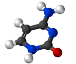

A) L'ADN à la base de la vie
L’ADN ( acide désoxyribonucléique) est une molécule constituée de 2 brins enroulés en double hélice. Ces 2 brins sont constitués d’acide phosphorique (acide) et de sucre (désoxyribose) qui constituent la partie stable de la molécule d’ADN et de 4 variables appelées bases azotés :
- l’adénine C5H5N5 (A)
- la thymine C5H6N2O2 (T)
- la cytosine C4H5N3O (C)
- la guanine C5H5N5O (G)
Ces bases s’attachent entre elles de manière précise : (A) avec (T), et (C) avec (G), formant une chaîne de ces 4 bases.
Chaque individu possède une suite de ces bases azotés qui lui est propre, ce qui fait la différence entre tous les êtres vivants. Cet ADN est ensuite compressé et enroulé pour former un nombre de chromosome bien précis par cellule (46 pour les humains ). Ce sont ces chromosomes qui contiennent nos gènes qui donnent les instructions nécessaires à la cellule pour fabriquer ce dont elle ou d’autres cellules de l'organisme ont besoin.
Cliquez ici afin de voir le protocole expérimental de l'extraction d'ADN
B) Comment la vie apparaîtrait elle ?
La principale hypothèse que nous pourrions faire pour imaginer comment la vie sur une exoplanète apparaîtrait, est de supposer qu’elle apparaîtrait de la même manière que sur Terre. Pour cela, on admettra que la planète hypothétique en question respecte toutes les conditions précédemment cités. Cette exoplanète posséderait donc un ou plusieurs océans qui serait constitué de ce que les biologistes ont appelé une “soupe pré-biotique” ( pré = avant, biotique = la vie ). Cette soupe pré-biotique contiendrait tous les éléments nécessaires à l’apparition de la vie, la question reste encore de savoir comment ces éléments apparaîtraient. Plusieurs hypothèses ont été proposées :
Hypothèse 1
La première suppose que tous ces élément apparaîtraient grâce aux éclairs qui en chauffant l’air auraient créé des molécules plus complexes.
En 1952 Stanley Miller a réalisé une expérience fascinante. L’idée semble toute simple : recréer en laboratoire les conditions régnant sur Terre à l’époque de l’apparition de la vie !
Pour cela, Miller utilisa 3 ingrédients : un mélange de gaz sensés représenter l’atmosphère terrestre primitive (hydrogène, méthane et ammoniac, et bien sûr pas d’oxygène !); une fiole remplie d’eau chauffée, pour simuler l’océan; des décharges électriques, sous forme d’étincelles pouvant représenter l’impact d’éclairs.
En réalisant une circulation de l’atmosphère et en la soumettant à des éclairs, Miller a d’abord constaté des changements de couleur : le liquide collecté est devenu rose. Puis au bout d’une semaine d’expérience, il a analysé le contenu de la soupe ainsi formée.
Stanley Miller a pu mettre en évidence dans sa fiole la présence de 11 types différents d’acides aminés. Avec du gaz, de l’eau et des éclairs, Miller avait reconstitué les premières briques élémentaires de la vie sur Terre !
Depuis, on a analysé les résultats de son expérience avec des méthodes plus fines, et on s’est rendu compte qu’il avait créé environ 25 acides aminés, dont certains types ne sont pas utilisés par les organismes vivants de la Terre !
Hypothèse 2
La seconde hypothèse imagine que ces éléments pourraient être apportés par des objets celestes tels que les comètes et météores.
Aussi appelé exo-genèse, cette théorie suppose que la vie est d’origine extraterrestre.
Au début de sa vie, une planète est bombardée par de multiples débris cosmique comme des météorites et parfois des comètes.
Après analyse, les chercheurs se sont rendus compte que de multiples molécules d’acides aminés étaient présentes dans ces objets et que la réaction avec l’eau peut engendrer la création d’ARN.
Là où les hypothèses et théories se rejoignent c'est que les acides aminés se sont formés ,puis l'ARN et par la suite l'ADN.